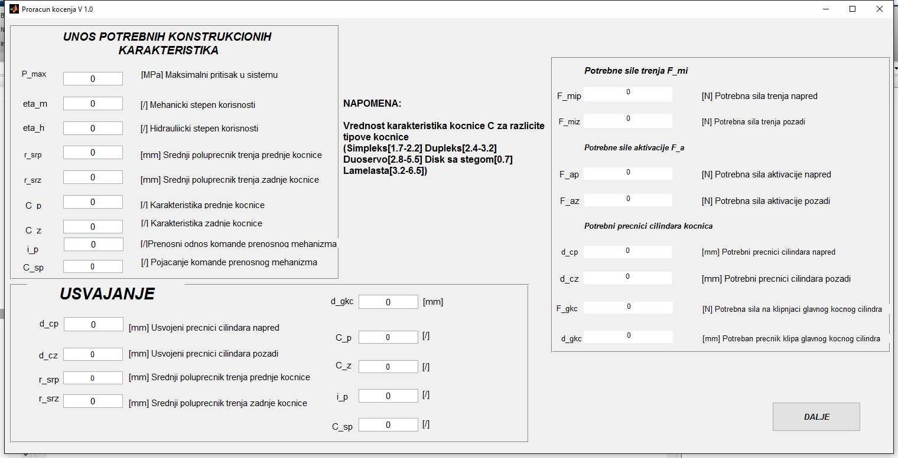

function varargout = FTK(varargin) % FTK MATLAB code for FTK.fig % FTK, by itself, creates a new FTK or raises the existing % singleton*. % % H = FTK returns the handle to a new FTK or the handle to % the existing singleton*. % % FTK('CALLBACK',hObject,eventData,handles,...) calls the local % function named CALLBACK in FTK.M with the given input arguments. % % FTK('Property','Value',...) creates a new FTK or raises the % existing singleton*. Starting from the left, property value pairs are % applied to the GUI before FTK_OpeningFcn gets called. An % unrecognized property name or invalid value makes property application % stop. All inputs are passed to FTK_OpeningFcn via varargin. % % *See GUI Options on GUIDE's Tools menu. Choose "GUI allows only one % instance to run (singleton)". % % See also: GUIDE, GUIDATA, GUIHANDLES % Edit the above text to modify the response to help FTK % Last Modified by GUIDE v2.5 17-Jul-2016 16:16:51 % Begin initialization code - DO NOT EDIT gui_Singleton = 1; gui_State = struct('gui_Name', mfilename, ... 'gui_Singleton', gui_Singleton, ... 'gui_OpeningFcn', @FTK_OpeningFcn, ... 'gui_OutputFcn', @FTK_OutputFcn, ... 'gui_LayoutFcn', [] , ... 'gui_Callback', []); if nargin && ischar(varargin{1}) gui_State.gui_Callback = str2func(varargin{1}); end if nargout [varargout{1:nargout}] = gui_mainfcn(gui_State, varargin{:}); else gui_mainfcn(gui_State, varargin{:}); end % End initialization code - DO NOT EDIT %feature('DefaultCharacterSet', 'UTF8') % --- Executes just before FTK is made visible. function FTK_OpeningFcn(hObject, eventdata, handles, varargin) % This function has no output args, see OutputFcn. % hObject handle to figure % eventdata reserved - to be defined in a future version of MATLAB % handles structure with handles and user data (see GUIDATA) % varargin command line arguments to FTK (see VARARGIN) % Choose default command line output for FTK %handles.Fmip=num2str(getappdata(0,'Fmip')) handles.output = hObject; set(handles.Counter,'String',0)%handles za brojac % Update handles structure guidata(hObject, handles); %FTK_Rac %set(handles.Gui_FTK, 'units', 'normalized', 'position', [0.05 0.15 0.9 0.8]) setappdata(0,'FTK', gcf); setappdata(gcf, 'FTK_Rac', @FTK_Rac); % UIWAIT makes FTK wait for user response (see UIRESUME) % uiwait(handles.Gui_FTK); % --- Outputs from this function are returned to the command line. function varargout = FTK_OutputFcn(hObject, eventdata, handles) % varargout cell array for returning output args (see VARARGOUT); % hObject handle to figure % eventdata reserved - to be defined in a future version of MATLAB % handles structure with handles and user data (see GUIDATA) % Get default command line output from handles structure varargout{1} = handles.output; function pmax_Callback(hObject, eventdata, handles) % hObject handle to pmax (see GCBO) % eventdata reserved - to be defined in a future version of MATLAB % handles structure with handles and user data (see GUIDATA) % Hints: get(hObject,'String') returns contents of pmax as text % str2double(get(hObject,'String')) returns contents of pmax as a double p_hmax=str2double(get(hObject,'String')); setappdata(0,'p_hmax',p_hmax); % --- Executes during object creation, after setting all properties. function pmax_CreateFcn(hObject, eventdata, handles) % hObject handle to pmax (see GCBO) % eventdata reserved - to be defined in a future version of MATLAB % handles empty - handles not created until after all CreateFcns called % Hint: edit controls usually have a white background on Windows. % See ISPC and COMPUTER. if ispc && isequal(get(hObject,'BackgroundColor'), get(0,'defaultUicontrolBackgroundColor')) set(hObject,'BackgroundColor','white'); end function eta_m_Callback(hObject, eventdata, handles) % hObject handle to eta_m (see GCBO) % eventdata reserved - to be defined in a future version of MATLAB % handles structure with handles and user data (see GUIDATA) % Hints: get(hObject,'String') returns contents of eta_m as text % str2double(get(hObject,'String')) returns contents of eta_m as a double eta_m=str2double(get(hObject,'String')); setappdata(0,'eta_m',eta_m); % --- Executes during object creation, after setting all properties. function eta_m_CreateFcn(hObject, eventdata, handles) % hObject handle to eta_m (see GCBO) % eventdata reserved - to be defined in a future version of MATLAB % handles empty - handles not created until after all CreateFcns called % Hint: edit controls usually have a white background on Windows. % See ISPC and COMPUTER. if ispc && isequal(get(hObject,'BackgroundColor'), get(0,'defaultUicontrolBackgroundColor')) set(hObject,'BackgroundColor','white'); end function eta_h_Callback(hObject, eventdata, handles) % hObject handle to eta_h (see GCBO) % eventdata reserved - to be defined in a future version of MATLAB % handles structure with handles and user data (see GUIDATA) % Hints: get(hObject,'String') returns contents of eta_h as text % str2double(get(hObject,'String')) returns contents of eta_h as a double eta_h=str2double(get(hObject,'String')); setappdata(0,'eta_h',eta_h); % --- Executes during object creation, after setting all properties. function eta_h_CreateFcn(hObject, eventdata, handles) % hObject handle to eta_h (see GCBO) % eventdata reserved - to be defined in a future version of MATLAB % handles empty - handles not created until after all CreateFcns called % Hint: edit controls usually have a white background on Windows. % See ISPC and COMPUTER. if ispc && isequal(get(hObject,'BackgroundColor'), get(0,'defaultUicontrolBackgroundColor')) set(hObject,'BackgroundColor','white'); end function r_srp_Callback(hObject, eventdata, handles) % hObject handle to r_srp (see GCBO) % eventdata reserved - to be defined in a future version of MATLAB % handles structure with handles and user data (see GUIDATA) % Hints: get(hObject,'String') returns contents of r_srp as text % str2double(get(hObject,'String')) returns contents of r_srp as a double r_srp_ul=str2double(get(hObject,'String')); setappdata(0,'r_srp_ul',r_srp_ul); % --- Executes during object creation, after setting all properties. function r_srp_CreateFcn(hObject, eventdata, handles) % hObject handle to r_srp (see GCBO) % eventdata reserved - to be defined in a future version of MATLAB % handles empty - handles not created until after all CreateFcns called % Hint: edit controls usually have a white background on Windows. % See ISPC and COMPUTER. if ispc && isequal(get(hObject,'BackgroundColor'), get(0,'defaultUicontrolBackgroundColor')) set(hObject,'BackgroundColor','white'); end function r_srz_Callback(hObject, eventdata, handles) % hObject handle to r_srz (see GCBO) % eventdata reserved - to be defined in a future version of MATLAB % handles structure with handles and user data (see GUIDATA) % Hints: get(hObject,'String') returns contents of r_srz as text % str2double(get(hObject,'String')) returns contents of r_srz as a double r_srz_ul=str2double(get(hObject,'String')); setappdata(0,'r_srz_ul',r_srz_ul); % --- Executes during object creation, after setting all properties. function r_srz_CreateFcn(hObject, eventdata, handles) % hObject handle to r_srz (see GCBO) % eventdata reserved - to be defined in a future version of MATLAB % handles empty - handles not created until after all CreateFcns called % Hint: edit controls usually have a white background on Windows. % See ISPC and COMPUTER. if ispc && isequal(get(hObject,'BackgroundColor'), get(0,'defaultUicontrolBackgroundColor')) set(hObject,'BackgroundColor','white'); end function C_p_Callback(hObject, eventdata, handles) % hObject handle to C_p (see GCBO) % eventdata reserved - to be defined in a future version of MATLAB % handles structure with handles and user data (see GUIDATA) % Hints: get(hObject,'String') returns contents of C_p as text % str2double(get(hObject,'String')) returns contents of C_p as a double C_p=str2double(get(hObject,'String')); setappdata(0,'C_p',C_p); % --- Executes during object creation, after setting all properties. function C_p_CreateFcn(hObject, eventdata, handles) % hObject handle to C_p (see GCBO) % eventdata reserved - to be defined in a future version of MATLAB % handles empty - handles not created until after all CreateFcns called % Hint: edit controls usually have a white background on Windows. % See ISPC and COMPUTER. if ispc && isequal(get(hObject,'BackgroundColor'), get(0,'defaultUicontrolBackgroundColor')) set(hObject,'BackgroundColor','white'); end function C_z_Callback(hObject, eventdata, handles) % hObject handle to C_z (see GCBO) % eventdata reserved - to be defined in a future version of MATLAB % handles structure with handles and user data (see GUIDATA) % Hints: get(hObject,'String') returns contents of C_z as text % str2double(get(hObject,'String')) returns contents of C_z as a double C_z=str2double(get(hObject,'String')); setappdata(0,'C_z',C_z); % --- Executes during object creation, after setting all properties. function C_z_CreateFcn(hObject, eventdata, handles) % hObject handle to C_z (see GCBO) % eventdata reserved - to be defined in a future version of MATLAB % handles empty - handles not created until after all CreateFcns called % Hint: edit controls usually have a white background on Windows. % See ISPC and COMPUTER. if ispc && isequal(get(hObject,'BackgroundColor'), get(0,'defaultUicontrolBackgroundColor')) set(hObject,'BackgroundColor','white'); end function FTK_Rac
%Odredjivanje ukupnih sila i momenata %========================================================================== %%Velicine %========================================================================== %F_uk [N] Ukupna sila kocenja %rd [m] Dinamicki poluprecnik trenja %F_kpo [N] Sila kocenja na prednjoj osovini u opterecenom stanju %F_kzo [N] Sila kocenja na zadnjoj osovini u opterecenom stanju %F_kpto [N] Sila po tocku na predjoj osovini u opterecenom stanju %F_zpto [N] Sila po tocku na zadnjoj osovini u opterecenom stanju %M_kpto [Nm] Moment kocenja po tocku na prednjoj osovini u % opterecenom stanju %M_zpto [Nm] Moment kocenja po tocku na zadnjoj osovini u % opterecenom stanju. %r_srp [m] Srednji poluprecnik trenja prednje % kocnice(0.25-0.4rd) %C_p [/] Karakteristika prednje kocnice %r_srz [m] Srednji poluprecnik trenja zadnje kocnice(0.25-0.4rd) %C_z [/] Karakteristika zadnje kocnice %Fmip [N] Potrebna sila trenja na prednjoj osovini %Fmiz [N] Potrebna sila trenja na zadnjoj osovini %eta_m [/] Mehanicki stepen korisnosti (0.5-0.9) %p_hmax [MPa] Najveci neregulisani pritisak u HPM-u (6-10(12)[MPa]) %A_kp [m^2] Potrebna povrsina poprecnog preseka klipa kocnog cil. %A_kz [m^2] Potrebna povrsina poprecnog preseka klipa kocnog cil. %eta_h [/] Hidraulicki stepen korisnosti (0.9) %d_kcp [m] Precnik klipa kocnog cilindra prednjih kocnica %d_kcz [m] Precnik klipa kocnog cilindra zadnjih kocnica %==========================================================================
%Funkcija za unos podataka---- % koristi se naredba 'input' za unos preko komandne linije % opcija 's' se odnosi na to da izlazni parametar bude string % zatim se koristi komanda 'str2num' za pretvaranje stringa u numericki % zapis %Primer---- InputStr_N=input('Unesi broj stepeni prenosa N: ','s'); % N = str2num(InputStr_N); %==========================================================================
%Ulazne Velicine %========================================================================== F_ku=getappdata(0,'F_ku'); R=getappdata(0,'R'); rd=getappdata(0,'r_d'); eta_m=getappdata(0,'eta_m'); eta_h=getappdata(0,'eta_h'); p_hmax=getappdata(0,'p_hmax').*(10.^6);%[Pa] r_srp=getappdata(0,'r_srp_ul'); setappdata(0,'r_srp',r_srp) r_srz=getappdata(0,'r_srz_ul'); setappdata(0,'r_srz',r_srz) C_p=getappdata(0,'C_p'); C_z=getappdata(0','C_z'); dialog11=getappdata(0,'dialog11'); if dialog11==1 R=getappdata(0,'R_o2'); end %==========================================================================
%Sile kocenja po osovinama u opterecenom stanju F_kpo=F_ku.*(R./(1+R)); setappdata(0,'F_kpo',F_kpo) F_kzo=F_ku.*(1./(1+R)); setappdata(0,'F_kzo',F_kzo) %Sile kocenja po tocku u opterecenom stanju F_kpto=F_kpo./2; setappdata(0,'F_kpto',F_kpto) F_kzto=F_kzo./2; setappdata(0,'F_kzto',F_kzto) %Momenti kocenja po tockovima u opterecenom stanju M_kpto=F_kpto.*rd; setappdata(0,'M_kpto',M_kpto) M_kzto=F_kzto.*rd; setappdata(0,'M_kzto',M_kzto) %Izbor srednjeg poluprecnika trenja (0.25-0.4)*rd [m] %r_srp=r_srp1.*rd; %r_srz=r_srz1.*rd; %Izbor karakteristika kocnice C(Simpleks[1.7-2.2] Dupleks[2.4-3.2] %Duoservo[2.8-5.5] Disk sa stegom[0.7] Lamelasta[3.2-6.5]) %Potrebne sile trenja po kocnicama F_mip=M_kpto./(r_srp./1000); F_miz=M_kzto./(r_srz./1000); setappdata(0,'F_mip',F_mip) setappdata(0,'F_miz',F_miz) %getappdata(0,'F_mip') %getappdata(0,'F_miz') %Potrebne sile aktiviranja kocnica F_ap=(F_mip./C_p)./eta_m; F_az=(F_miz./C_z)./eta_m; setappdata(0,'F_ap',F_ap) setappdata(0,'F_az',F_az) %getappdata(0,'F_ap') %getappdata(0,'F_az') %Odredjivanje potrebne povrsine poprecnog preseka klipa kocnog cilindra[m^2]! A_kp=((F_ap./p_hmax)./eta_h); A_kz=((F_az./p_hmax)./eta_h); setappdata(0,'A_kp',A_kp) setappdata(0,'A_kz',A_kz) %Odredjivanje potrebnog precnika klipa kocnog cilindra[m]! d_kcp=(((4.*A_kp)./pi).^(1/2)); d_kcz=(((4.*A_kz)./pi).^(1/2)); %Odredjivanje potrebnog precnika klipa kocnog cilindra[mm]! d_kcp=ceil(d_kcp.*1000); d_kcz=ceil(d_kcz.*1000); setappdata(0,'d_kcprac',d_kcp) setappdata(0,'d_kczrac',d_kcz)
function PrenMeh_Rac
%Funkcija za izbor komande %Ulazne velicine %========================================================================== %F_p [N] Sila na pedali(ne sme da predje vrednost od 500N) %i_p [/] Prenosni odnos prenosnog mehanizma komande(4.5-7) %p_h [MPa] Maksimalni pritisak u sistemu (6-10MPa) %d_gkc [m] Precnik glavnog kocnog cilindra %K_sp [/] Pojacanje servo pojacala %eta_mk [/] Stepen korisnosti komande %F_gkc [N] Sila na klipnjaci glavnog kocnog cilindra %p_hmax [MPa] Najveci neregulisani pritisak u HPM-u (6-10(12)[MPa]) %f_pedale [mm] Hod pedale(vrednosti za mehanicki prenosni %sistem-ne treba da predje 150[mm], dok za servo pojacani sistem vrednosti %bi trebalo da su u opsegu od 75 do 90[mm] da bi se ostvarilo usporenje od %priblizno 1g) %==========================================================================
%Funkcija za unos podataka---- % koristi se naredba 'input' za unos preko komandne linije % opcija 's' se odnosi na to da izlazni parametar bude string % zatim se koristi komanda 'str2num' za pretvaranje stringa u numericki % zapis %Primer---- InputStr_N=input('Unesi broj stepeni prenosa N: ','s'); % N = str2num(InputStr_N); %========================================================================== F_pul=getappdata(0,'F_pmax'); %(max 500[N])-iz ulaznih podataka i_p=getappdata(0,'i_p'); %Bice uneto iz trenutnog GUI-a p_hmax=getappdata(0,'p_hmax');%Bice uneto iz proslog GUI-a C_sp=getappdata(0,'C_sp'); %Bice uneto iz trenutnog GUI-a eta_h=getappdata(0,'eta_h'); %Bice uneto iz proslog GUI-a %Moze i da se usvoji i da se prema njemu dimenzionise prenosni odnos pedale %Izracunavanje precnika glavnog kocnog cilindra[m]! %========================================================================== %Potrebna sila na klipnjaci glavnog kocnog cilindra [N] F_gkc=F_pul.*i_p.*C_sp.*eta_h; setappdata(0,'F_gkc',F_gkc) %getappdata(0,'F_gkc') %Izracunavanje precnika gkc [m] A=4.*F_gkc; B=p_hmax.*pi; d_gkc=(A./B).^(1./2); %Izracunavanje precnika glavnog kocnog cilindra[mm]! %d_gkc=d_gkc%.*1000 %Potrebni precnik da bi se ostvarila potrebna sila, %treba usvojiti najblizi precnik prema katalogu proizv. setappdata(0,'d_gkc',d_gkc) getappdata(0,'d_gkc') % --- Executes on button press in pushbutton1.
function pushbutton1_Callback(hObject, eventdata, handles) % hObject handle to pushbutton1 (see GCBO) % eventdata reserved - to be defined in a future version of MATLAB % handles structure with handles and user data (see GUIDATA) %Provera unetih podataka% %-------------------------------------------------------------------------- bool bool_value=getappdata(0,'bool_value_ul'); if any(bool_value==0) warndlg('Nisu uneti svi podaci, unesite sve podatke i pritisnite dugme dalje!!!','UPOZORENJE') error('Vrednost nije uneta') end il=getappdata(0,'UsvajanjeFTK'); if isempty(il) FTK_Rac PrenMeh_Rac end %BROJAC %-------------------------------------------------------------------------- currentCounterValue = str2double(get(handles.Counter, 'String')); newString = sprintf('%d', int32(currentCounterValue +1)); set(handles.Counter, 'String', newString ) counter=str2double(get(handles.Counter,'String')); % % if counter>2 %ako je brojac veci od 2, resetovati ga na 0 % newString=0; % newString=num2str(newString); % set(handles.Counter, 'String', newString ) % % end %ULAZI ZA ISPIS %-------------------------------------------------------------------------- handles.F_mip=num2str(getappdata(0,'F_mip')); handles.F_miz=num2str(getappdata(0,'F_miz')); handles.F_ap=num2str(getappdata(0,'F_ap')); handles.F_az=num2str(getappdata(0,'F_az')); handles.d_cp=num2str(getappdata(0,'d_kcprac')); handles.d_cz=num2str(getappdata(0,'d_kczrac')); handles.F_gkc=num2str(getappdata(0,'F_gkc')); handles.d_gkc=num2str(getappdata(0,'d_gkc')); %ISPIS U POLJA %-------------------------------------------------------------------------- F_miphan=handles.F_mip; %Sila trenja napred set(handles.Fmip,'String',F_miphan) F_mizhan=handles.F_miz; %Sila trenja pozadi set(handles.Fmiz,'String',F_mizhan) F_aphan=handles.F_ap; %Sila aktivacije napred set(handles.Fap,'String',F_aphan) F_azhan=handles.F_az; %Sila aktivacije pozadi set(handles.Faz,'String',F_azhan) d_kcphan=handles.d_cp; %Precnik klipa napred set(handles.dcp,'String',d_kcphan) d_kczhan=handles.d_cz; %Precnik klipa pozadi set(handles.dcz,'String',d_kczhan) d_gkchan=handles.d_gkc; %Precnik gkc-a set(handles.dgkcispis,'String',d_gkchan) F_gkchan=handles.F_gkc; %Sila na klipnjaci gkc set(handles.Fgkcispis,'String',F_gkchan) %-------------------------------------------------------------------------- if isempty(il) Gui_dialog14 il=getappdata(0,'UsvajanjeFTK'); end if counter>1 if il==1 InputOutputFinal print_FTK close() GUI_ZavProrBR else if il==0 % % InputOutputFinal bool_data_usv=getappdata(0,'bool_usv_pod'); if bool_data_usv==0 warndlg('Nisu unete usvojene vrednosti, unesite usvojene vrednosti!','UPOZORENJE') error('Vrednost nije uneta') end % % % if counter>1 % print_FTK close() GUI_ZavProrBR % end % % end % end end function bool i_p=getappdata(0,'i_p'); r_srp=getappdata(0,'r_srp_ul'); r_srz=getappdata(0,'r_srz_ul'); C_p=getappdata(0,'C_p'); C_z=getappdata(0,'C_z'); d_cp=getappdata(0,'d_cp'); d_cz=getappdata(0,'d_cz'); p_hmax=getappdata(0,'p_hmax'); eta_h=getappdata(0,'eta_h'); eta_m=getappdata(0,'eta_m'); d_gkc=getappdata(0,'d_gkc'); C_sp=getappdata(0,'C_sp'); i_p(isempty(i_p))=0; C_sp(isempty(C_sp))=0; C_p(isempty(C_p))=0; C_z(isempty(C_z))=0; d_cp(isempty(d_cp))=0; d_cz(isempty(d_cz))=0; r_srp(isempty(r_srp))=0; r_srz(isempty(r_srz))=0; eta_h(isempty(eta_h))=0; eta_m(isempty(eta_m))=0; p_hmax(isempty(p_hmax))=0; %Vrednosti za upozorenje bool_data=[r_srp, r_srz, C_p,C_z ,p_hmax, eta_h, eta_m,C_sp,i_p ]; bool_value_ul=logical(bool_data); setappdata(0,'bool_value_ul', bool_value_ul) function print_FTK %Funkcija za stampanje podataka u .xls tabelu %-------------------------------------------------------------------------- %Podaci za upis F_kpo=getappdata(0,'F_kpo'); F_kzo=getappdata(0,'F_kzo'); F_kpto=getappdata(0,'F_kpto'); F_kzto=getappdata(0,'F_kzto'); M_kpto=getappdata(0,'M_kpto'); M_kzto=getappdata(0,'M_kzto'); r_srp=getappdata(0,'r_srp'); r_srz=getappdata(0,'r_srz'); C_p=getappdata(0,'C_p'); C_z=getappdata(0,'C_z'); F_mip=getappdata(0,'F_mip'); F_miz=getappdata(0,'F_miz'); F_ap=getappdata(0,'F_ap'); F_az=getappdata(0,'F_az'); A_kp=getappdata(0,'A_kp'); A_kz=getappdata(0,'A_kz'); d_kcp=getappdata(0,'d_cp'); d_kcz=getappdata(0,'d_cz'); p_hmax=getappdata(0,'p_hmax'); eta_h=getappdata(0,'eta_h'); eta_m=getappdata(0,'eta_m'); d_gkc=getappdata(0,'d_gkc'); C=getappdata(0,'xls_ime_xls'); %Komanda za unos %Vrednosti za upozorenje bool_data1=[r_srp, r_srz, C_p,C_z ,p_hmax, eta_h, eta_m ]; bool_value1=logical(bool_data1); bool_data2=[d_kcp,d_kcz,d_gkc]; setappdata(0,'bool_value1',bool_value1) bool_value2=logical(bool_data2); setappdata(0,'bool_value2',bool_value2) bool_value_tot=[bool_value1, bool_value2]; setappdata(0,'bool_value_tot', bool_value_tot) DataMatlab2XLS = {'F_kpo[N]', 'F_kzo[N]','F_kpto[N]','F_kzto[N]', 'M_kpto[Nm]',... 'M_kzto[Nm]','r_srpd[mm]','r_srzd[mm]','C_p[/]','C_z[/]','F_mip[N]',... 'F_miz[N]','F_ap[N]','F_az[N]','A_kp[m^2]','A_kz[m^2]','d_kcp[mm]','d_kcz[mm]',... 'd_gkc[mm]','p_hmax[Pa]','eta_h[/]','eta_m[/]';F_kpo F_kzo F_kpto F_kzto M_kpto M_kzto r_srp... r_srz C_p C_z F_mip F_miz F_ap F_az A_kp A_kz d_kcp d_kcz d_gkc p_hmax eta_h... eta_m}; DataMatlab2XLSt=DataMatlab2XLS'; warning('off','MATLAB:xlswrite:Addsheet'); xlswrite(C, DataMatlab2XLSt,... 'OdrPotrMomentaiSila','A1'); % --- Executes during object creation, after setting all properties. function Fmip_CreateFcn(hObject, eventdata, handles) % hObject handle to Fmip (see GCBO) % eventdata reserved - to be defined in a future version of MATLAB % handles empty - handles not created until after all CreateFcns called function dcpu_Callback(hObject, eventdata, handles) % hObject handle to dcpu (see GCBO) % eventdata reserved - to be defined in a future version of MATLAB % handles structure with handles and user data (see GUIDATA) % Hints: get(hObject,'String') returns contents of dcpu as text % str2double(get(hObject,'String')) returns contents of dcpu as a double d_kcpu= str2double(get(hObject,'String')); setappdata(0,'d_kcpu',d_kcpu) % --- Executes during object creation, after setting all properties. function dcpu_CreateFcn(hObject, eventdata, handles) % hObject handle to dcpu (see GCBO) % eventdata reserved - to be defined in a future version of MATLAB % handles empty - handles not created until after all CreateFcns called % Hint: edit controls usually have a white background on Windows. % See ISPC and COMPUTER. if ispc && isequal(get(hObject,'BackgroundColor'), get(0,'defaultUicontrolBackgroundColor')) set(hObject,'BackgroundColor','white'); end function dczu_Callback(hObject, eventdata, handles) % hObject handle to dczu (see GCBO) % eventdata reserved - to be defined in a future version of MATLAB % handles structure with handles and user data (see GUIDATA) % Hints: get(hObject,'String') returns contents of dczu as text % str2double(get(hObject,'String')) returns contents of dczu as a double d_kczu=str2double(get(hObject,'String')); setappdata(0,'d_kczu',d_kczu) % --- Executes during object creation, after setting all properties. function dczu_CreateFcn(hObject, eventdata, handles) % hObject handle to dczu (see GCBO) % eventdata reserved - to be defined in a future version of MATLAB % handles empty - handles not created until after all CreateFcns called % Hint: edit controls usually have a white background on Windows. % See ISPC and COMPUTER. if ispc && isequal(get(hObject,'BackgroundColor'), get(0,'defaultUicontrolBackgroundColor')) set(hObject,'BackgroundColor','white'); end function rsrpu_Callback(hObject, eventdata, handles) % hObject handle to rsrpu (see GCBO) % eventdata reserved - to be defined in a future version of MATLAB % handles structure with handles and user data (see GUIDATA) r_srpu=str2double(get(hObject,'String')); setappdata(0,'r_srpu',r_srpu) % Hints: get(hObject,'String') returns contents of rsrpu as text % str2double(get(hObject,'String')) returns contents of rsrpu as a double % --- Executes during object creation, after setting all properties. function rsrpu_CreateFcn(hObject, eventdata, handles) % hObject handle to rsrpu (see GCBO) % eventdata reserved - to be defined in a future version of MATLAB % handles empty - handles not created until after all CreateFcns called % Hint: edit controls usually have a white background on Windows. % See ISPC and COMPUTER. if ispc && isequal(get(hObject,'BackgroundColor'), get(0,'defaultUicontrolBackgroundColor')) set(hObject,'BackgroundColor','white'); end function rsrzu_Callback(hObject, eventdata, handles) % hObject handle to rsrzu (see GCBO) % eventdata reserved - to be defined in a future version of MATLAB % handles structure with handles and user data (see GUIDATA) r_srzu=str2double(get(hObject,'String')); setappdata(0,'r_srzu',r_srzu) % Hints: get(hObject,'String') returns contents of rsrzu as text % str2double(get(hObject,'String')) returns contents of rsrzu as a double % --- Executes during object creation, after setting all properties. function rsrzu_CreateFcn(hObject, eventdata, handles) % hObject handle to rsrzu (see GCBO) % eventdata reserved - to be defined in a future version of MATLAB % handles empty - handles not created until after all CreateFcns called % Hint: edit controls usually have a white background on Windows. % See ISPC and COMPUTER. if ispc && isequal(get(hObject,'BackgroundColor'), get(0,'defaultUicontrolBackgroundColor')) set(hObject,'BackgroundColor','white'); end function ip_Callback(hObject, eventdata, handles) % hObject handle to ip (see GCBO) % eventdata reserved - to be defined in a future version of MATLAB % handles structure with handles and user data (see GUIDATA) i_p=str2double(get(hObject,'String')); setappdata(0,'i_p',i_p) % Hints: get(hObject,'String') returns contents of ip as text % str2double(get(hObject,'String')) returns contents of ip as a double % --- Executes during object creation, after setting all properties. function ip_CreateFcn(hObject, eventdata, handles) % hObject handle to ip (see GCBO) % eventdata reserved - to be defined in a future version of MATLAB % handles empty - handles not created until after all CreateFcns called % Hint: edit controls usually have a white background on Windows. % See ISPC and COMPUTER. if ispc && isequal(get(hObject,'BackgroundColor'), get(0,'defaultUicontrolBackgroundColor')) set(hObject,'BackgroundColor','white'); end function csp_Callback(hObject, eventdata, handles) % hObject handle to csp (see GCBO) % eventdata reserved - to be defined in a future version of MATLAB % handles structure with handles and user data (see GUIDATA) C_sp=str2double(get(hObject,'String')); setappdata(0,'C_sp',C_sp) % Hints: get(hObject,'String') returns contents of csp as text % str2double(get(hObject,'String')) returns contents of csp as a double % --- Executes during object creation, after setting all properties. function csp_CreateFcn(hObject, eventdata, handles) % hObject handle to csp (see GCBO) % eventdata reserved - to be defined in a future version of MATLAB % handles empty - handles not created until after all CreateFcns called % Hint: edit controls usually have a white background on Windows. % See ISPC and COMPUTER. if ispc && isequal(get(hObject,'BackgroundColor'), get(0,'defaultUicontrolBackgroundColor')) set(hObject,'BackgroundColor','white'); end function cpu_Callback(hObject, eventdata, handles) % hObject handle to cpu (see GCBO) % eventdata reserved - to be defined in a future version of MATLAB % handles structure with handles and user data (see GUIDATA) C_pu=str2double(get(hObject,'String')); setappdata(0,'C_pu',C_pu) % Hints: get(hObject,'String') returns contents of cpu as text % str2double(get(hObject,'String')) returns contents of cpu as a double % --- Executes during object creation, after setting all properties. function cpu_CreateFcn(hObject, eventdata, handles) % hObject handle to cpu (see GCBO) % eventdata reserved - to be defined in a future version of MATLAB % handles empty - handles not created until after all CreateFcns called % Hint: edit controls usually have a white background on Windows. % See ISPC and COMPUTER. if ispc && isequal(get(hObject,'BackgroundColor'), get(0,'defaultUicontrolBackgroundColor')) set(hObject,'BackgroundColor','white'); end function czu_Callback(hObject, eventdata, handles) % hObject handle to czu (see GCBO) % eventdata reserved - to be defined in a future version of MATLAB % handles structure with handles and user data (see GUIDATA) C_zu=str2double(get(hObject,'String')); setappdata(0,'C_zu',C_zu) % Hints: get(hObject,'String') returns contents of czu as text % str2double(get(hObject,'String')) returns contents of czu as a double % --- Executes during object creation, after setting all properties. function czu_CreateFcn(hObject, eventdata, handles) % hObject handle to czu (see GCBO) % eventdata reserved - to be defined in a future version of MATLAB % handles empty - handles not created until after all CreateFcns called % Hint: edit controls usually have a white background on Windows. % See ISPC and COMPUTER. if ispc && isequal(get(hObject,'BackgroundColor'), get(0,'defaultUicontrolBackgroundColor')) set(hObject,'BackgroundColor','white'); end function ipu_Callback(hObject, eventdata, handles) % hObject handle to ipu (see GCBO) % eventdata reserved - to be defined in a future version of MATLAB % handles structure with handles and user data (see GUIDATA) i_pu=str2double(get(hObject,'String')); setappdata(0,'i_pu',i_pu) % Hints: get(hObject,'String') returns contents of ipu as text % str2double(get(hObject,'String')) returns contents of ipu as a double % --- Executes during object creation, after setting all properties. function ipu_CreateFcn(hObject, eventdata, handles) % hObject handle to ipu (see GCBO) % eventdata reserved - to be defined in a future version of MATLAB % handles empty - handles not created until after all CreateFcns called % Hint: edit controls usually have a white background on Windows. % See ISPC and COMPUTER. if ispc && isequal(get(hObject,'BackgroundColor'), get(0,'defaultUicontrolBackgroundColor')) set(hObject,'BackgroundColor','white'); end function cspu_Callback(hObject, eventdata, handles) % hObject handle to cspu (see GCBO) % eventdata reserved - to be defined in a future version of MATLAB % handles structure with handles and user data (see GUIDATA) C_spu=str2double(get(hObject,'String')); setappdata(0,'C_spu',C_spu) % Hints: get(hObject,'String') returns contents of cspu as text % str2double(get(hObject,'String')) returns contents of cspu as a double % --- Executes during object creation, after setting all properties. function cspu_CreateFcn(hObject, eventdata, handles) % hObject handle to cspu (see GCBO) % eventdata reserved - to be defined in a future version of MATLAB % handles empty - handles not created until after all CreateFcns called % Hint: edit controls usually have a white background on Windows. % See ISPC and COMPUTER. if ispc && isequal(get(hObject,'BackgroundColor'), get(0,'defaultUicontrolBackgroundColor')) set(hObject,'BackgroundColor','white'); end function dgkc_Callback(hObject, eventdata, handles) % hObject handle to dgkc (see GCBO) % eventdata reserved - to be defined in a future version of MATLAB % handles structure with handles and user data (see GUIDATA) d_gkcu=str2double(get(hObject,'String')); setappdata(0,'d_gkcu',d_gkcu) % Hints: get(hObject,'String') returns contents of dgkc as text % str2double(get(hObject,'String')) returns contents of dgkc as a double % --- Executes during object creation, after setting all properties. function dgkc_CreateFcn(hObject, eventdata, handles) % hObject handle to dgkc (see GCBO) % eventdata reserved - to be defined in a future version of MATLAB % handles empty - handles not created until after all CreateFcns called % Hint: edit controls usually have a white background on Windows. % See ISPC and COMPUTER. if ispc && isequal(get(hObject,'BackgroundColor'), get(0,'defaultUicontrolBackgroundColor')) set(hObject,'BackgroundColor','white'); end % --- Executes during object creation, after setting all properties. function dcp_CreateFcn(hObject, eventdata, handles) % hObject handle to dcp (see GCBO) % eventdata reserved - to be defined in a future version of MATLAB % handles empty - handles not created until after all CreateFcns called function edit24_Callback(hObject, eventdata, handles) % hObject handle to edit24 (see GCBO) % eventdata reserved - to be defined in a future version of MATLAB % handles structure with handles and user data (see GUIDATA) % Hints: get(hObject,'String') returns contents of edit24 as text % str2double(get(hObject,'String')) returns contents of edit24 as a double % --- Executes during object creation, after setting all properties. function edit24_CreateFcn(hObject, eventdata, handles) % hObject handle to edit24 (see GCBO) % eventdata reserved - to be defined in a future version of MATLAB % handles empty - handles not created until after all CreateFcns called % Hint: edit controls usually have a white background on Windows. % See ISPC and COMPUTER. if ispc && isequal(get(hObject,'BackgroundColor'), get(0,'defaultUicontrolBackgroundColor')) set(hObject,'BackgroundColor','white'); end function InputOutputFinal
%Funkcija za ispis racunskih/usvojenih vrednosti %-------------------------------------------------------------------------- il=getappdata(0,'UsvajanjeFTK'); if il==0 i_pu=0; C_spu=0; C_pu=0; C_zu=0; d_cpu=0; d_czu=0; r_spu=0; r_srzu=0; end i_p=getappdata(0,'i_p'); i_pu=getappdata(0,'i_pu'); if isempty(i_p) setappdata(0,'i_p',i_pu) end
if i_pu>0 setappdata(0,'i_p',i_pu) end C_sp=getappdata(0,'C_sp'); C_spu=getappdata(0,'C_spu'); if isempty(C_sp) setappdata(0,'C_sp', C_spu) end if C_spu>0 setappdata(0,'C_sp', C_spu) end C_p=getappdata(0,'C_p'); C_pu=getappdata(0,'C_pu'); if isempty(C_p) setappdata(0,'C_p', C_pu) end if C_pu>0 setappdata(0,'C_p', C_pu) end C_z=getappdata(0,'C_z'); C_zu=getappdata(0,'C_zu'); if isempty(C_z) setappdata(0,'C_z', C_zu) end if C_zu>0 setappdata(0,'C_z', C_zu) end d_cp=getappdata(0,'d_kcprac'); setappdata(0,'d_cp',d_cp) d_cpu=getappdata(0,'d_kcpu'); if isempty(d_cp) setappdata(0,'d_cp',d_cpu) end if d_cpu>0 setappdata(0,'d_cp',d_cpu) end d_cz=getappdata(0,'d_kczrac'); setappdata(0,'d_cz',d_cz) d_czu=getappdata(0,'d_kczu'); if isempty(d_cz) setappdata(0,'d_cz',d_czu) end if d_czu>0 setappdata(0,'d_cz',d_czu) end d_gkc=getappdata(0,'d_gkc'); d_gkcu=getappdata(0,'d_gkcu'); if isempty(d_gkc) setappdata(0,'d_gkc',d_gkcu) end if d_gkcu>0 setappdata(0,'d_gkc',d_gkcu) end r_srp=getappdata(0,'r_srp'); r_srpu=getappdata(0,'r_srpu'); if isempty(r_srp) setappdata(0,'r_srp', r_srpu) end if r_srpu>0 setappdata(0,'r_srp', r_srpu) end r_srz=getappdata(0,'r_srz'); r_srzu=getappdata(0,'r_srzu'); if isempty(r_srz) setappdata(0,'r_srz', r_srzu) end if r_srzu>0 setappdata(0,'r_srz', r_srzu) end %Podaci za beskonacnu petlju do unosa svih usvojenih podataka %Problem treba da prikazuje kada podaci za usvajanje nisu uneti.... i_pu(isempty(i_pu))=0; C_spu(isempty(C_spu))=0; C_pu(isempty(C_pu))=0; C_pu(isempty(C_zu))=0; d_cpu(isempty(d_cpu))=0; d_czu(isempty(d_czu))=0; r_srpu(isempty(r_srpu))=0; r_srzu(isempty(r_srzu))=0; bool_data=[i_pu, C_spu, C_pu, C_zu, d_cpu, d_czu, r_srpu... , r_srzu]; bool_value=logical(bool_data); if any(bool_value)==1 bool_usv_pod=1; else bool_usv_pod=0; end setappdata(0,'bool_usv_pod',bool_usv_pod)